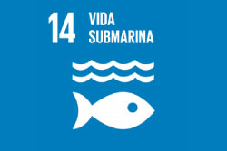

Vida submarina
Descripción del objetivo
Selecciona tarjeta para ampliar el tema
Aquí aparecerá el texto del tema
¿Por qué del objetivo?

¿Cuál es el problema?

Relación entre océanos y salud
¿Qué podemos hacer?
Datos destacables
